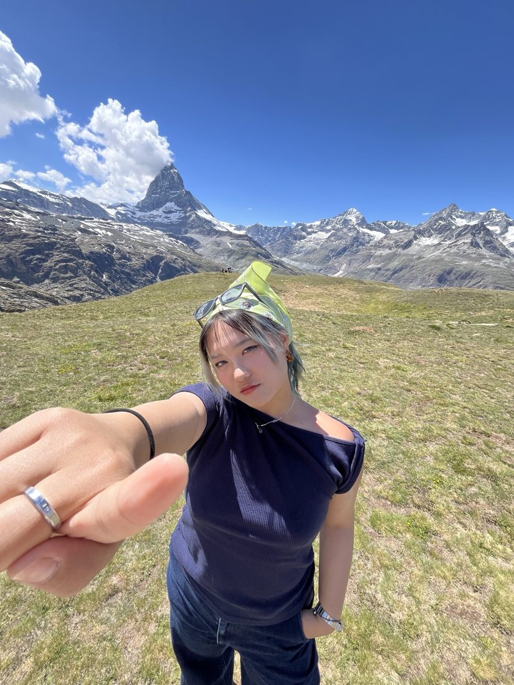
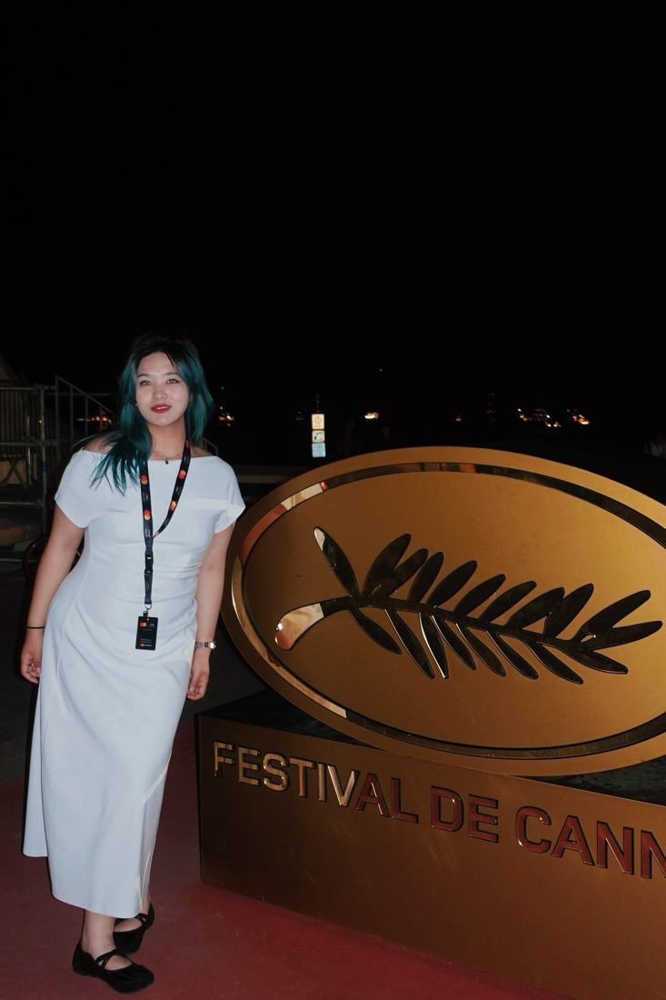

30+Corporate partners across Helsingborg and Skåne, built and managed as event manager
Managed three large events end to end (workshops, lectures and networking coffee chats) connecting 100+ students with companies, with 80%+ attendance at every event.
EventsB2B partnerships
x Marknadsföreningen i Helsingborgsregionen · @mihstudent ↗
Compliance course launch
Jul–Oct' 25 · Lund
0 → 1A corporate compliance course, from market research to launch
Benchmarked platforms like Udemy and Coursera, wrote a 6,000-word industry report to guide positioning, co-designed course content, and helped run a campus ambassador rollout with local universities.
Go-to-marketContent
x GPC
Brand & CEO Douyin
Jan–Jun' 24
100k+Customer interactions
Factory-tour episode for the founder's Douyin account · 2:21
Ran the brand's and the CEO's Douyin (TikTok) accounts, scripted product-launch videos and worked with 20+ KOLs across platforms.
PRSocial content
x Zhouheiya
Nordic social media
Jan–Mar' 25 · Stockholm
Planned and ran social media strategy across platforms for an edtech company, kept web and social content up to date, and tuned content to Nordic market trends and audience feedback.
AwardChina Outdoor Media Advertising Golden Wall Award, for a campaign I worked on
Worked on station and airport advertising campaigns, including one for Zhuhai airport, plus branded new-media content for major clients including Tencent.
AdvertisingBranding
x Asiaray Media Group
Brand consulting case
Apr' 26 · Helsingborg
“Scale your story, localise your impact.”
Group project with four classmates: we reframed the value proposition for an AI localisation company and proposed this slogan, which landed well with the client.
Brand strategy
x Mindpark · Contentor
Photography, video, research & writing
Photography
Film festivals, live music, theatre and travel, shot and edited by me.
Video
Brand content for Douyin, and reels I made as a Lund University student ambassador. My personal edits on Bilibili have reached 220k+ views.
Co-reported economy stories for Hubei's provincial daily as a reporting intern, turning data into news for a general readership.
About me
How does a journalist, PR and marketing specialist, and Chinese girl, dropped in the middle of a Scandinavian winter, become the next hire who transforms your team?
Short answer: I've reported for a regional newspaper in China, worked in advertising media, and handled PR for a major brand. I come up with ideas, produce creative content and vibe-code. I hold a Swedish master's degree, and I study and work in Chinese, English and Swedish. The long answer is everything on this page.


ChineseNative
EnglishProfessional
SwedishConversational
Education & skills
Education
Lund UniversityMSc, Culture and Creative Management2024–26
Wuhan UniversityJoint bachelor, Journalism2022–23
Hubei UniversityBA, Journalism2020–24
Skills
Event managementB2B partnershipsSocial media strategyPR & KOL collaborationContent productionMarket research